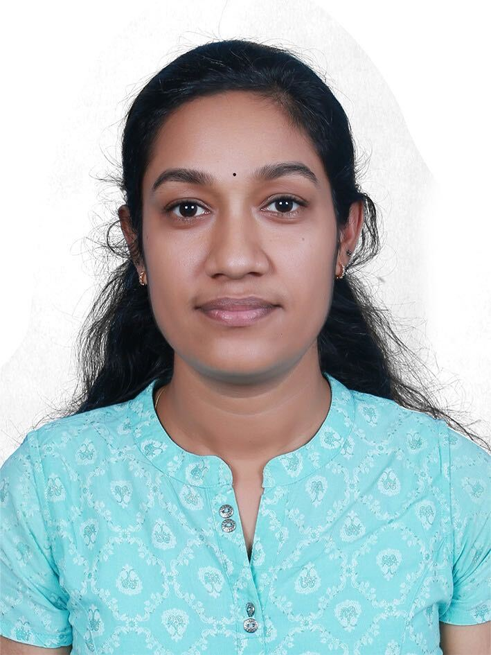

Brine stability under Martian conditions.
Deliquescence, transient liquid formation, evaporation and hydration changes under Mars-relevant pressure and temperature.
We investigate Mars and other planetary bodies through environmental simulation, geomorphology, remote sensing, field analogs, and planetary mapping.
Planetary surfaces record change. We combine experiments, observations and field geology to understand the processes written into that record.
From transient Martian brines and ground ice to ancient deltas, tectonics and planetary mapping, our work links physical processes to what spacecraft observe from orbit.
Deliquescence, transient liquid formation, evaporation and hydration changes under Mars-relevant pressure and temperature.
Polygonal terrain, scalloped depressions, brain terrain and ground-ice related landforms reveal the climatic history of Mars.
Tank experiments and orbital geomorphology help reconstruct Martian lakes, oceans, regression and transgression.
Machine learning for geomorphic classification and large-scale interpretation of planetary surfaces.
Crustal stresses, tectonic structures and surface hazards relevant to future lunar exploration.
Experimental products and hyperspectral measurements are compared directly with orbital signatures from planetary missions.
Our experimental infrastructure is designed to connect controlled laboratory measurements with planetary processes seen in orbital data.
Controlled experiments on brine formation, evaporation, frost-related activity, desiccation, mineral stability and regolith-atmosphere interactions.

VNIR and SWIR hyperspectral imaging integrated with a motorized scanning stage for mineralogical and hydration-related measurements of samples, analog materials and experimental products.

Deliquescence, liquid stability, evaporation pathways and water activity.
Formation, sublimation and surface modification in cold environments.
Experimental results interpreted together with terrestrial analog sites.
Laboratory products compared with orbital spectra and mission observations.
Our team works across planetary geology, geomorphology, remote sensing and experimental surface science.

Associate Professor, Institute for Planetary Materials, Okayama University

Planetary surface science and experimental research

Present-day water activity in Martian high latitudes

Water-ice distribution in the Martian subsurface

Incoming master's student

Delta morphology and reconstruction of Martian global regression

Polygon morphology and identification of near-surface ice
Experiments, field analogs and planetary observations form a single research workflow.

Tank experiments for paleohydrologic reconstruction

Field observations linked to planetary surface processes

Experimental infrastructure for Mars-relevant environments
Takaki Sako received the Dean’s Choice Award at Okayama University.
Takumu Chijiiwa received the OU-SPRING Fellowship to begin his PhD at Okayama University.
The Planetary Surface Simulation Chamber was fully installed and became ready for experiments.
Installation completed for the new Hyperspectral Imaging Systems covering VNIR and SWIR ranges.
Press coverage on EurekAlert featured our Geology study on Martian mid-latitude ice accumulation.
A first-author paper by Trishit Ruj was accepted in Geology, presenting new insights into Martian mid-latitude glaciation.
Trishit Ruj received the Inamori Foundation Research Grant.
Hiral PB received the HISF International Scholarship.